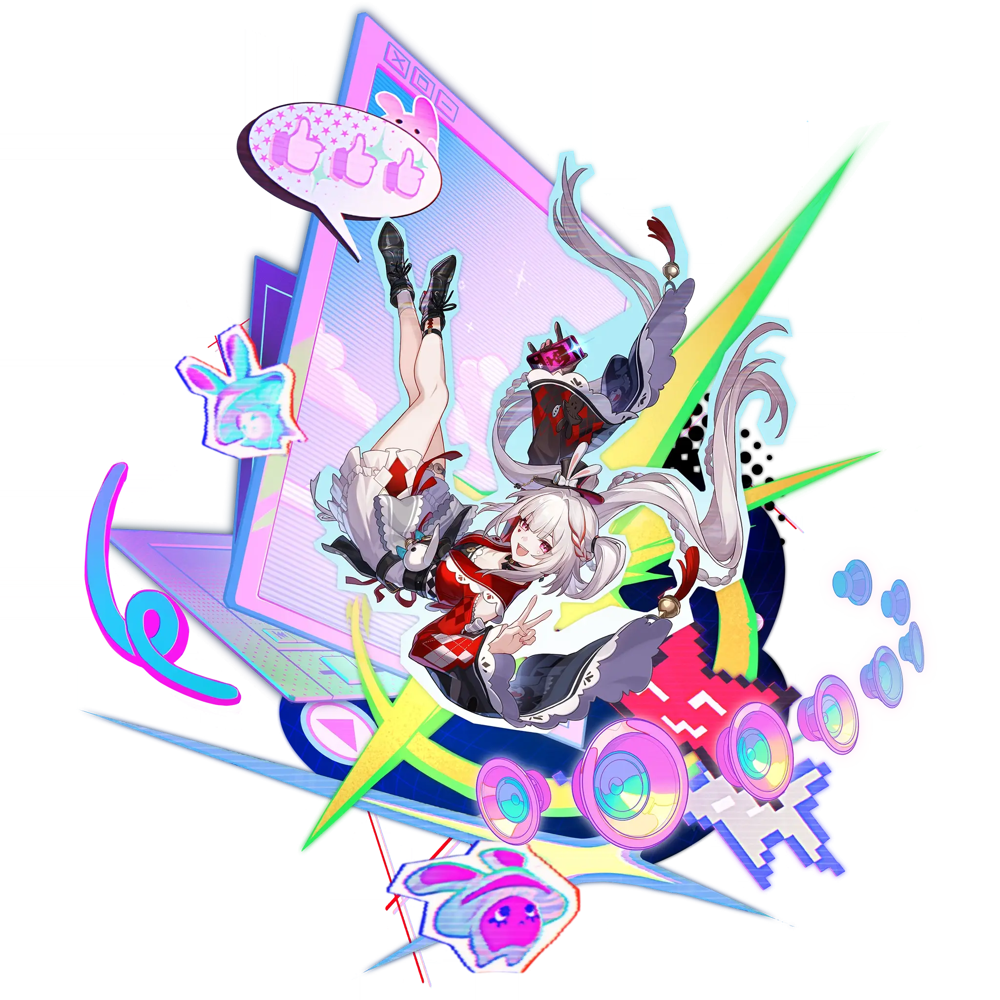

Sparxie
Best Sparxie build guide for Honkai Star Rail. See Sparxie's best Relics, Light Cones, teams, Eidolons, Trace priority, and how to play Sparxie.
🔍 Detail Skill
Semua skill aktif dan pasif beserta efeknya.
Deals Fire DMG equal to #1[i]% of Sparxie's ATK to one designated enemy.
Finalizes the livestream. Deals Fire DMG equal to #1[i]% of Sparxie's ATK to one designated enemy, and Fire DMG equal to #2[i]% of Sparxie's ATK to adjacent targets.
Start a livestream to turn Basic ATK into "Bloom! Winner Takes All" and trigger "Engagement Farming" 1 time. During this ability, "Engagement Farming" can be triggered repeatedly, up to #1[i] time(s). Using this ability is not considered as using a Skill.
Causes "Bloom! Winner Takes All" to increase the DMG multiplier against one designated enemy by #1[i]% and the DMG multiplier against adjacent targets by #2[i]%. Randomly gains one of the following gifts: • "Straight Fire": 2 Punchline point(s) and 2 Skill point(s). • "Unreal Banger": 1 Punchline point(s). Using this ability is not considered as using a Skill.
When Sparxie holds "Certified Banger": • Using Enhanced Basic ATK deals #1[i]% Fire Elation DMG to one designated enemy, and #2[i]% Fire Elation DMG to their adjacent targets. Additionally, for every 1 instance of "Engagement Farming" triggered, the Enhanced Basic ATK deals 1 extra instance of #2[i]% Fire Elation DMG to 1 random attacked enemy target. • Using Ultimate deals #3[i]% Fire Elation DMG
After using the Technique, inflicts enemies within a set area with "Block" for 10 second(s). "Blocked" enemies cannot detect ally targets. After entering combat via actively attacking a "Blocked" enemy, deals Fire DMG to all enemies equal to 50% of Sparxie's ATK and recovers 2 Skill Point(s) for allies.
⚔ Light Cone Terbaik
Diurutkan dari yang paling kuat. Persentase menunjukkan performa relatif terhadap pilihan terbaik.
💎 Relic Set Terbaik
Set terbaik untuk karakter ini, diurutkan berdasarkan prioritas.
📊 Stat Utama
Stat yang dicari pada tiap slot.
👥 Tim yang Direkomendasikan
Karakter yang sering dipasangkan bersama Sparxie.
 Yao Guang
Yao Guang
 Trailblazer • Elation
Trailblazer • Elation
 Sparkle
Sparkle
 Pearl
Pearl
🔗 Lanjutkan
Build ini dirangkum dari Prydwen Institute. Starwise tidak menghitung sendiri. Angka bisa berubah setelah patch atau karakter baru rilis.